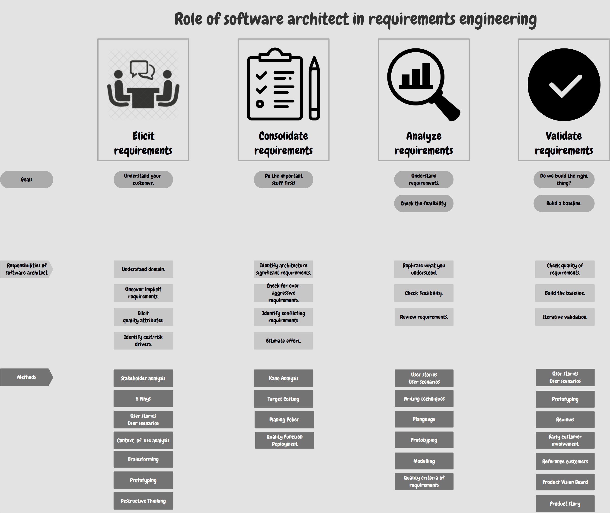

Goals and tasks for the SWA in the early phases of RE
#Goals
Ensure that the solution aligns with business goals: The architect verifies that the proposed technical solution supports the project's business goals and expected benefits.
Identify architecturally significant requirements (ASR) early In particular, non-functional requirements, constraints, and integration relationships that have a fundamental impact on the architecture.
Verify the technical feasibility of requirements: Assess whether the requirements are realistic, implementable, and testable in the given technological and project context.
Clarify unclear, implicit, and conflicting requirements: Help transform stakeholders' general or vague needs into an unambiguous and technically usable form.
Minimize risks by recognizing problems early Identify risky requirements, conflicts between quality attributes, and the potential impacts of changes.
Prepare a sound foundation for architecture design Ensure that requirements contain sufficient information for subsequent architectural decision-making.
The software architect must not wait for "finished" requirements. They must proactively enter the process from the very first phases of product definition. The LOPO document and established best practices define the architect's involvement through the framework Understand — Analyze — Contribute:
Elicitate (Understand): The goal is to fully understand the customer and their domain. The architect does not passively wait for a finished specification but actively participates in the initial meetings with stakeholders. They listen to visions, uncover hidden or implicit requirements (especially quality attributes), and identify the main risks and "cost drivers" (factors that can exponentially increase development costs). They use techniques such as stakeholder analysis, the 5 Whys method, brainstorming, or rapid prototyping to do this.
Consolidate: The goal is to set priorities and focus on what matters most ("Do the important stuff first!"). The SWA filters the collected data and identifies architecturally significant requirements (ASRs). In this phase, they also uncover conflicts between requirements, negotiate overly aggressive requirements (such as extreme, unrealistic availability), and contribute to estimating the overall effort. They use methods such as KANO analysis, Planning Poker, or Target Costing. They use methods such as KANO analysis, Planning Poker, or Target Costing.
Analyze (Analyze & Assess): The goal is to assess technical feasibility in detail. The architect reformulates requirements to verify that the team and the customer understand them in the same way. They examine system constraints and uphold the engineering rule "As simple as possible, but not simpler". They formalize vague wishes into testable structures through modeling (such as UML), Quality Attribute Scenarios, or specifications such as Planguage.
Validate: The goal is to confirm that we are designing the right solution and establish an approved baseline. The architect participates in reviewing requirements (for example, through walk-throughs or inspections) and verifies their quality and testability. They proactively verify these requirements iteratively through early involvement of reference customers or through prototypes, and oversee the creation of a baseline against which the architecture will be built and changed.

#Planguage
Planguage (a combination of the words planning and language) is a method and structured language created by Tom Gilb for precisely defining and quantifying qualitative (non-functional) requirements. Its main goal is to convert vague concepts (such as "the system must be user-friendly") into objectively measurable and testable values. Planguage uses a set of predefined keywords to achieve this The basic ones include:
- SCALE: The scale or unit in which the property will be measured
- METER: The method, process, or tool used to measure the value objectively
- MUST: The minimum acceptable threshold for the project's survival
- PLAN: The target level we plan to achieve and consider a success
- WISH: The ideal value if everything went perfectly (a delight factor)
#Example
The original, unclear requirement was roughly as follows: "The system should have low power consumption in standby mode, ideally at the level of ordinary electronic devices, that is, 5-10 W." Rewriting this requirement into the Planguage structure looks as follows:
- TAG (Label): Standby power consumption (STANDBY)
- GIST (Essence): The amount of energy consumed by the system when the fan is switched off and the hard disk is not spinning
- SCALE (Unit): Watts (W)
- METER (Measurement method): Physical measurement on 3 test devices for 10 seconds at a temperature of 23 °C (± 2 °C)
- MUST (Required minimum): A maximum of 10 W (a threshold the system must not exceed; otherwise, it has failed)
- PLAN (Planned target): 5 W (the ideal target value for project success)
- WISH (Wish): 3 W (an ideal but not required value that would significantly exceed expectations)